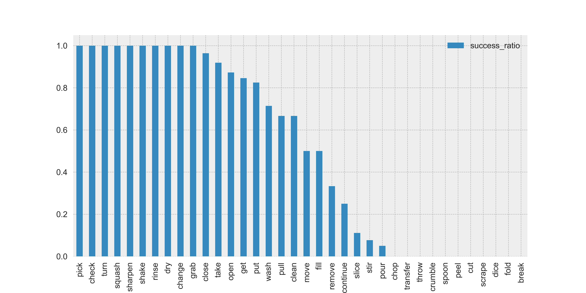
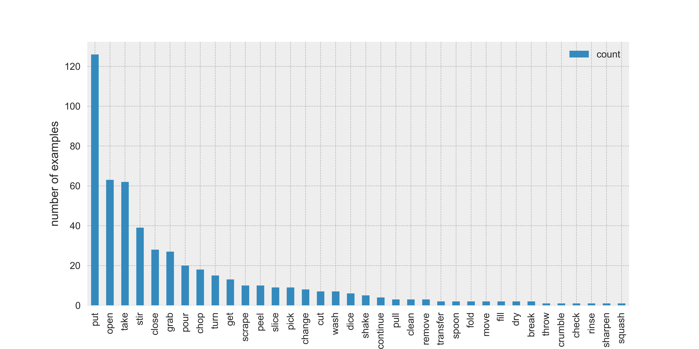

Some actions can be reversed
Some actions are irreversible
Sometimes it isn't clear whether an action is reversible
Which actions are reversible?

Reversed action analysis sample stats
- 2 people's kitchen: 1 video per person
- 850 actions
- Reversibility hand labelled by single annotation
- 500 successfully reversed actions
